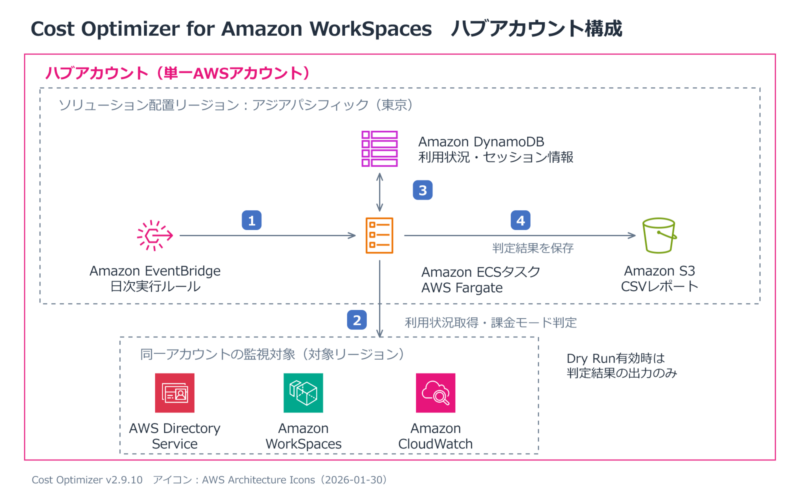
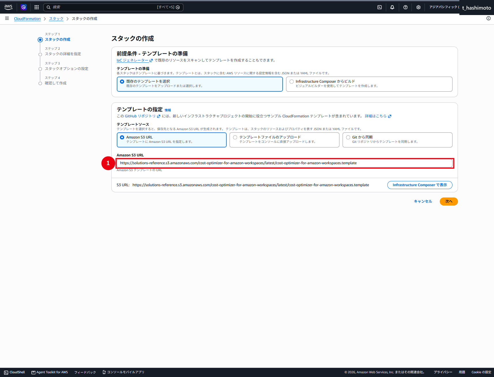
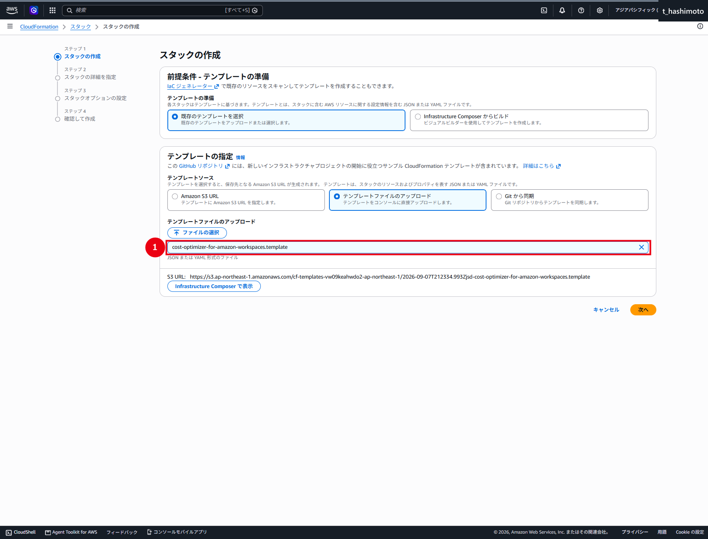
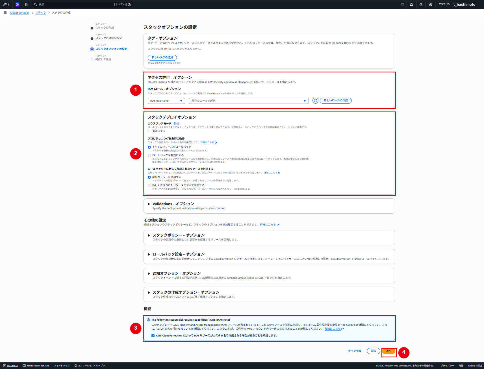
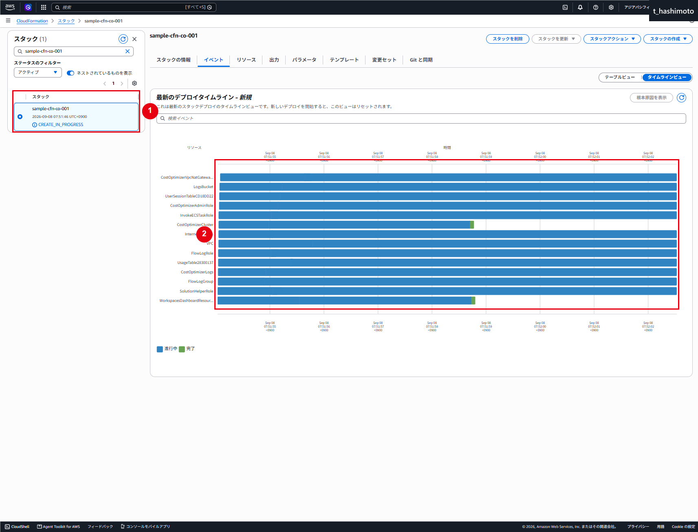
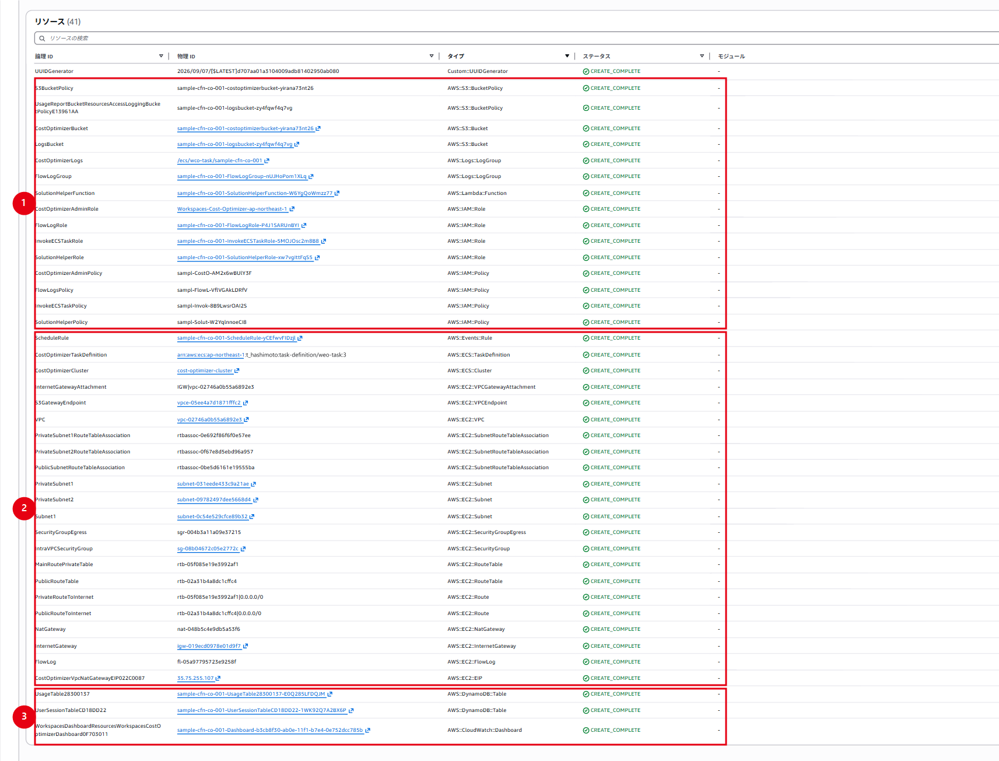

Cost Optimizerの構築・設定
仕様
構成・動作
Cost Optimizer for Amazon WorkSpacesは、WorkSpaces本体の組み込み機能ではなく、AWS Solutions Libraryから提供されるCloudFormationテンプレートで構築するソリューションです。WorkSpacesの利用時間と料金しきい値を比較し、時間課金のAUTO_STOPと月額課金のALWAYS_ONのどちらが適しているかを日次で判定します。

図中の番号は、1：日次タスク起動、2：同一アカウントの利用状況取得と課金モード判定、3：DynamoDBの利用状況・セッション情報の保存と参照、4：S3へのCSVレポート出力を示します。東京リージョンにソリューションを配置し、監視対象リージョンはRegionsの設定に従います。
今回の構成では、東京リージョンにハブテンプレートだけをデプロイし、同一AWSアカウント内のWorkSpacesを監視します。スポークアカウントは使用しません。
| 構成要素 | 役割 |
|---|---|
| Amazon EventBridge | 1日1回、ECSタスクを起動する |
| Amazon ECS／AWS Fargate | WorkSpacesの利用時間集計、料金しきい値との比較、課金モード変更を実行する |
| Amazon DynamoDB | WorkSpaceの利用状況とセッション情報を保持する |
| Amazon S3 | 日次・月次CSVレポートとS3アクセスログを保存する |
| CloudWatch Logs／ダッシュボード | 実行ログ、対象台数、変換件数、エラーおよび処理時間を確認する |
EventBridgeが日次で起動するECSタスクは、WorkSpacesの利用状況取得、料金しきい値との比較、DynamoDBの状態参照・保存、S3へのCSV出力を行います。実行ログと運用メトリクスはCloudWatchへ出力します。
| 項目 | 今回の設定 | 事前に理解しておく内容 |
|---|---|---|
| Dry Run | 初期構築時はYes |
判定結果をレポートへ出力しますが、課金モードは変更しない |
| 未使用WorkSpace終了 | No |
未使用WorkSpaceを自動終了しない |
| 除外タグ | Skip_Convert |
指定したWorkSpaceを課金モード変更と終了の対象外にする |
| 監視対象リージョン | Regionsは空欄 |
同一アカウント内の対応リージョンを走査するため、必要に応じて対象を限定する |
| VPC | CreateNewVPC=Yes |
NAT GatewayとElastic IPが作成され、継続料金が発生する |
⚠️ 注意：日次処理を重複実行しない
本ソリューションは1日1回の利用時間計算を前提としています。EventBridgeスケジュールの直接変更や同一UTC日内のECSタスク複数実行は、請求対象時間と課金モード判定を不正確にする可能性があります。CloudFormationを構成管理の正とし、配下のリソースを個別編集しません。
CloudFormationスタックを削除しても、S3バケット、DynamoDBテーブル、ECS実行ログおよびVPC Flow Logsの一部はDeletionPolicy: Retainにより残ります。削除時はデータ保持と残存料金を個別に確認します。
バージョン差分と作成リソースの詳細は、v2.8.1とv2.9.10の差分および作成リソース一覧を参照します。
管理範囲
設定値は取得時点の検証例です。実作業では承認済みパラメータと現在のAWS環境を確認します。
制約事項
初期構築はDryRun=Yes、TerminateUnusedWorkspaces=No、TestEndOfMonth=Noを使用します。
構築作業
1. テンプレートを指定する
- CloudFormationで「スタックの作成」を選択します。
- 「既存のテンプレートを選択」および「Amazon S3 URL」を選択します。
- 次のv2.9.10公式配布テンプレートURLを入力し、「次へ」を選択します。
https://solutions-reference.s3.amazonaws.com/cost-optimizer-for-amazon-workspaces/v2.9.10/cost-optimizer-for-amazon-workspaces.template

⚠️ 注意：固定バージョンのテンプレートURLを使用する
図2は2026年9月8日に取得した証跡です。当時v2.9.10を指していたlatest URLが表示されています。再構築時は、画像内のlatestを上記のv2.9.10に置き換えて入力してください。別バージョンへ更新する場合は、そのバージョンのリリースノートと変更セットを事前に確認します。
テンプレートを事前に承認・保管する運用では、「テンプレートファイルのアップロード」を使用しても構いません。選択したファイル名が承認済みテンプレートと一致することを確認します。

2. スタック名とネットワークを設定する
今回の設定値は次のとおりです。
| 項目 | 設定値 | 説明 |
|---|---|---|
| Stack name | sample-cfn-co-001 |
今回のスタック名 |
| Create New VPC | Yes |
専用VPCを新規作成 |
| VpcCIDR | 10.250.0.0/24 |
専用VPC |
| PublicSubnetCIDR | 10.250.0.0/28 |
NAT Gateway用パブリックサブネット |
| PrivateSubnet1CIDR | 10.250.0.32/28 |
ECSタスク用プライベートサブネット1 |
| PrivateSubnet2CIDR | 10.250.0.48/28 |
ECSタスク用プライベートサブネット2 |
| EgressCIDR | 0.0.0.0/0 |
ECSタスクの送信先。組織基準に合わせて制限を検討する |
Create New VPC=Yes のため、Existing VPC SettingsのサブネットIDとセキュリティグループIDは空欄にします。

3. 安全設定と料金しきい値を設定する
| 分類 | パラメータ | 設定値 |
|---|---|---|
| Testing | DryRun | Yes |
| Testing | TestEndOfMonth | No |
| Logging | LogLevel | INFO |
| Pricing | ValueLimit | 81 |
| Pricing | StandardLimit | 85 |
| Pricing | PerformanceLimit | 83 |
| Pricing | GraphicsG4dnLimit | 217 |
| Pricing | GraphicsProG4dnLimit | 80 |
| Pricing | PowerLimit | 83 |
| Pricing | PowerProLimit | 80 |
| Pricing | GeneralPurpose4xlargeLimit | 121 |
| Pricing | GeneralPurpose8xlargeLimit | 125 |
| Container | Auto-update Container Image | Yes |
| Regions | List of AWS Regions | 空欄 |
| Termination | Terminate unused workspaces | No（選択肢：No／Dry Run／Yes） |
| Termination | Number of months | 1 |
| Multi account | Organization ID | 空欄 |
| Multi account | Management Account ID | 空欄 |
⚠️ 注意：料金しきい値は今回の明示設定値
83、217、83、80等は取得時点のAWS実装ガイド掲載値を明示設定した値です。v2.9.10配布テンプレート自体の既定値と同義ではありません。料金改定や地域差を確認し、変更管理のうえで値を決定します。
Regions を空欄にすると、アカウント内の対応リージョンをすべて走査します。組織で未有効化のリージョンに対するエラーを抑え、処理範囲を明確にする場合は、WorkSpacesを運用するリージョンだけをカンマ区切りで指定します。
TerminateUnusedWorkspaces は、Noで終了機能を無効化し、Dry Runで終了候補だけをレポートし、Yesで終了を許可します。実際に終了するには、全体のDryRun=Noも必要です。スタンバイWorkSpaceは対象外です。TerminateUnusedWorkspaces=YesとTestEndOfMonth=Yesを同時に設定しないでください。

4. スタックオプションを設定する
- CloudFormationサービスロールは、組織方針で指定された場合のみ選択します。
- 「プロビジョニング失敗時の動作」は すべてのリソースをロールバック とします。
- ロールバック中に新規作成されたリソースは、通常の削除ポリシーに従う設定を維持します。
AWS::IAM::Role等の作成を確認し、「AWS CloudFormationによってIAMリソースがカスタム名で作成される場合があることを承認します」を選択します。- 「次へ」を選択します。

5. 内容を確認して作成する
- スタック名、28個のパラメータ、IAM承認を確認します。
DryRun=Yes、TerminateUnusedWorkspaces=No、TestEndOfMonth=Noを再確認します。

- 画面下部へ移動し、「送信」を選択します。
作成中はCloudFormationのイベントで失敗がないことを確認します。

6. デプロイ結果を確認する
- スタックが
CREATE_COMPLETEとなっていることを確認します。 - 「リソース」タブで、本構成では41件が
CREATE_COMPLETEとなっていることを確認します。 - 「出力」タブで
SolutionVersion=v2.9.10、DryRun=Yes、BucketName、StandardLimit=85などの料金しきい値を確認します。 - 作成直後はダッシュボードが空でも異常とは限りません。初回ECSタスク実行後にS3、ログ、メトリクスを確認します。


7. 作成後の注意
CreateNewVPC=YesではNAT GatewayとElastic IPが作成され、継続料金が発生します。- スタック削除後も、削除ポリシー
RetainのS3、DynamoDB、CloudWatch Logsが残ります。 - DryRun解除はデプロイ直後に実施せず、レポートを十分な期間確認してから行います。
- 詳細は作成リソース一覧を参照します。
運用設定の管理
- 料金しきい値とDryRunはCloudFormation変更セットで変更します。
- CloudFormation配下のECSタスク定義、IAM、S3、EventBridge等を個別編集しません。
DryRun=Noへ変更する前に、複数月分のDryRunレポート、お客様承認、除外対象、切り戻し方法を確認します。- 自動変更から除外するWorkSpaceには、公式仕様に従って
Skip_Convertタグを使用します。 - 成功可否はダッシュボードだけで判断せず、ECS、CloudWatch Logs、S3 CSV、WorkSpaces実設定を突合します。
参考資料
| 資料 | 確認する内容 |
|---|---|
| GitHubリポジトリ | ソリューションの概要、開発・ビルド方法、公開コード |
| ソースコード（v2.9.10） | 本手順書で使用するバージョンの実装 |
| リリースノート（v2.9.10） | 本手順書のバージョンでの変更点・修正内容 |
| リリース一覧 | 更新候補のバージョンとリリース履歴 |
本手順書の実装を確認する場合は、v2.9.10に固定したソースコードを参照します。バージョンを更新する場合は、現在のバージョンから更新先までのリリースノートとCloudFormation変更セットを確認します。
参考：お客様環境 v2.8.1 と本手順書 v2.9.10 の差分
対象データ
お客様環境で確認した Cost Optimizer for Amazon WorkSpaces v2.8.1 と、本手順書で構築・検証した v2.9.10 の差分を整理します。
- 比較確認日：2026年9月8日
- お客様環境：v2.8.1
- 本手順書の対象：v2.9.10
- 比較対象：AWS公式CHANGELOG、GitHubタグ間比較、各バージョンの公式配布ハブテンプレート
⚠️ 注意：バージョン差分と環境設定値を分ける
「バージョン更新によるテンプレート仕様の差分」「お客様環境に保存されているパラメータ値」「本手順書で採用した設定値」は別のものです。本資料では、この3種類を区別して記載します。
差分の要約
| 確認項目 | v2.8.1 | v2.9.10 | 判定 |
|---|---|---|---|
| ハブテンプレートのパラメータ定義数 | 26 | 28 | v2.9.0の機能追加に伴い2個増加 |
| ハブテンプレートの論理リソース定義数 | 48 | 48 | 追加・削除なし |
| 検証スタックで実際に作成されたリソース数 | ― | 41 | 単一アカウント、CreateNewVPC=Yes の検証結果 |
主な機能差分は、v2.9.0で追加された GeneralPurpose.4xlarge および GeneralPurpose.8xlarge のWorkSpacesバンドル対応です。v2.9.1では旧データとの互換性に関する不具合が修正され、v2.9.2からv2.9.10までは主として依存ライブラリ、コンテナベースイメージおよび脆弱性への対応が継続されています。
論理リソース数が同じでも、設定内容が同一という意味ではありません。ECSタスク定義、コンテナイメージ、IAM定義、CloudWatchダッシュボードのタグなどには更新があります。
バージョン別の主な変更
| バージョン | AWS公式CHANGELOGの主な内容 | 本手順書での扱い |
|---|---|---|
| v2.8.1 | DockerfileのPythonベースイメージを更新し、パッケージ脆弱性へ対応 | お客様環境の比較基準 |
| v2.9.0 | GeneralPurpose.4xlarge／8xlarge対応、運用メトリクス収集と文書の更新、DockerベースイメージをDebian 12から13へ更新、複数の依存関係・脆弱性修正 | 新しい2種類の料金しきい値を追加して説明する |
| v2.9.1 | v2.7.xからv2.9.0へ更新した際、既存DynamoDBレコードに workspace_type がないことで発生する KeyError を修正 |
旧データを保持して更新する場合の互換性修正として記載する。v2.8.1固有の不具合とは断定しない |
| v2.9.2～v2.9.7 | OpenSSL、urllib3、aws-cdk-lib、Pythonベースイメージ、idna、fast-uri、js-yaml、pytestなどを更新 |
主として保守・セキュリティ更新 |
| v2.9.8 | aws-cdk-lib と推移的依存関係を更新し、非推奨の addDependency を addResourceDependency へ変更 |
構築コードの保守性・セキュリティ改善 |
| v2.9.9 | js-yamlを更新し、脆弱性へ対応 | セキュリティ更新 |
| v2.9.10 | aws-cdk-lib を2.265.0へ更新し、brace-expansionに関する脆弱性へ対応 |
本手順書で確認したリリース |
CloudFormationパラメータの差分
v2.9.0で追加されたパラメータ
v2.8.1の26パラメータに対し、v2.9.10では次の2パラメータが追加され、合計28パラメータになっています。
| 追加パラメータ | v2.9.10テンプレート内の既定値 | 用途 |
|---|---|---|
GeneralPurpose4xlargeLimit |
121時間 | GeneralPurpose.4xlargeを ALWAYS_ON へ切り替える月間使用時間の判定値 |
GeneralPurpose8xlargeLimit |
125時間 | GeneralPurpose.8xlargeを ALWAYS_ON へ切り替える月間使用時間の判定値 |
既存26パラメータは、v2.8.1とv2.9.10の公式配布テンプレートを比較した範囲で、Parameters に定義された既定値に変更はありません。
テンプレート内の既定値と現行ガイド掲載値
料金しきい値には、次の2種類の値があるため注意してください。
- 配布テンプレート既定値：CloudFormationテンプレートの
Parametersに埋め込まれた値 - 現行AWS実装ガイド掲載値：確認日時点でAWS実装ガイドのパラメータ表に掲載されている値。本手順書の設定例として使用
| 料金パラメータ | v2.8.1配布テンプレート | v2.9.10配布テンプレート | 現行AWS実装ガイド掲載値（2026年9月8日確認） |
|---|---|---|---|
ValueLimit |
81 | 81 | 81 |
StandardLimit |
85 | 85 | 85 |
PerformanceLimit |
80 | 80 | 83 |
GraphicsG4dnLimit |
334 | 334 | 217 |
GraphicsProG4dnLimit |
80 | 80 | 80 |
PowerLimit |
92 | 92 | 83 |
PowerProLimit |
78 | 78 | 80 |
GeneralPurpose4xlargeLimit |
― | 121 | 121 |
GeneralPurpose8xlargeLimit |
― | 125 | 125 |
したがって、Performance 83、Graphics.g4dn 217、Power 83、PowerPro 80は、v2.9.10への更新だけで自動的に変わるテンプレート既定値ではありません。本手順書では、現行AWS実装ガイドを基にCloudFormationへ明示的に設定する値として扱います。
既存スタックの更新時に「現在の値を使用」を選択したパラメータは、既存値が引き継がれます。料金しきい値を変更する場合は、CloudFormation変更セットでECSタスク定義などへの影響を確認し、承認後に反映してください。
リソース数の見方
公式テンプレートは両バージョンとも48件
v2.8.1とv2.9.10の公式配布ハブテンプレートには、それぞれ48件の論理リソースが定義されています。
- 追加された論理リソース：なし
- 削除された論理リソース：なし
- 更新された主な内容：ECSタスク定義、コンテナイメージ、料金しきい値の環境変数、IAM定義、依存ライブラリ、CloudWatchダッシュボードのソリューションタグ
今回41件となった理由
今回のスタック sample-cfn-co-001 は、ハブテンプレートのみを使用した単一アカウント構成で、CreateNewVPC=Yes として作成しました。OrganizationID と ManagementAccountId を空欄にしたため、マルチアカウント条件に依存する次の7件は作成されません。
- スポークアカウント登録用DynamoDBテーブル
- DynamoDB Gateway Endpoint
- ECSタスク用DynamoDBアクセス権限
- スポーク登録Lambda実行ロール
- スポーク登録Lambdaポリシー
- スポーク登録Lambda関数
- スポーク登録Lambda呼び出し権限
このため、実際の作成数は 48件－7件＝41件 です。41件はv2.9.10全構成で固定される件数ではありません。既存VPC利用、マルチアカウント構成、テンプレート更新などにより作成数は変わるため、各環境ではCloudFormationスタックの「リソース」タブを正として確認します。
コンテナイメージ自動更新の注意
Auto-update Container Image（テンプレート上の UseStableTagging）を Yes にすると、次のマイナーバージョンへ移行するまで、同一マイナーバージョンのstableタグが使用されます。
| バージョン | 固定リリースタグ | Auto-update Container Image=Yes のタグ |
|---|---|---|
| v2.8.1 | v2.8.1 |
v2.8_stable |
| v2.9.10 | v2.9.10 |
v2.9_stable |
stableタグは、同一マイナーバージョン内のセキュリティ修正版へ更新される場合があります。そのため、CloudFormation出力の SolutionVersion=v2.9.10 だけでは、実行時のコンテナイメージを完全には特定できません。
運用証跡として、次の情報を併せて保存してください。
- CloudFormationスタック出力の
SolutionVersion - ECSタスク定義のコンテナイメージURI
- 厳密な再現性が必要な場合は、実行タスクのイメージダイジェスト
固定リリースイメージのみを使用する場合は Auto-update Container Image=No とします。ただし、同一マイナーバージョン内のセキュリティ更新を自動取得しなくなるため、更新管理方法を別途定める必要があります。
更新時の確認事項
- 更新先バージョンを固定した配布テンプレートを使用してCloudFormation変更セットを作成します。
- 置換・削除対象、ECSタスク定義の新しいリビジョン、IAM変更を確認します。
- 料金しきい値、
DryRun、対象リージョンなど、引き継ぐ値と変更する値を区別します。 - 更新後に
SolutionVersion、ECSタスク定義のイメージ、EventBridgeターゲットを確認します。 - 次回の日次スケジュール実行後に、ECSタスク、CloudWatch Logs、S3レポートを確認します。手動実行は、AWS Supportとお客様が例外実行の影響を確認・承認した場合に限ります。
付録：作成リソース一覧（v2.9.10）
本付録の対象
本付録は、Cost Optimizer for Amazon WorkSpaces v2.9.10を、今回のスタックsample-cfn-co-001として次の条件でデプロイした際に作成されたAWSリソースを整理したものです。
- デプロイ方式：ハブテンプレートのみを使用した単一アカウント構成
- VPC設定：
CreateNewVPC=Yes - デプロイ先：アジアパシフィック（東京）リージョン（
ap-northeast-1） - 作成結果：CloudFormationスタックの「リソース」タブで41件すべてが
CREATE_COMPLETE
本一覧の論理IDとAWSリソースタイプは、今回取得したCloudFormation証跡およびAWS公式v2.9.10 CloudFormationテンプレートを照合して確認しています。物理IDにはスタック名や自動生成サフィックスが含まれるため、実環境ではCloudFormationスタックの「リソース」タブを正とします。
カテゴリ別概要
| 分類 | 件数 | 主な役割 |
|---|---|---|
| S3・レポート／監査 | 4 | 日次・月次CSVレポートとS3サーバーアクセスログを保存する |
| DynamoDB | 2 | WorkSpaceの利用状況とセッション履歴を保持する |
| VPC・通信・VPC Flow Logs | 22 | Fargateタスクのプライベート実行環境、AWSサービスへの通信経路、通信監査を提供する |
| デプロイ補助 | 4 | ソリューション固有UUIDの生成など、CloudFormationデプロイを補助する |
| ECS・実行権限・スケジュール | 8 | WorkSpacesの利用状況を日次で集計し、判定・変更・レポート出力を行う |
| CloudWatchダッシュボード | 1 | WorkSpaces数、課金形態、変換結果、エラー等を可視化する |
| 合計 | 41 |
S3・レポート／監査リソース
| No. | 論理ID | AWSリソースタイプ | 役割・確認ポイント |
|---|---|---|---|
| 1 | CostOptimizerBucket |
AWS::S3::Bucket |
ディレクトリ別および集約版の日次・月次CSVレポートを保存する。サーバー側暗号化、365日後のオブジェクト削除、S3サーバーアクセスログ出力が設定される |
| 2 | S3BucketPolicy |
AWS::S3::BucketPolicy |
CostOptimizerBucket への非HTTPS通信を拒否する |
| 3 | LogsBucket |
AWS::S3::Bucket |
CostOptimizerBucket のS3サーバーアクセスログを保存する。ECSコンテナの実行ログを保存するバケットではない |
| 4 | UsageReportBucketResourcesAccessLoggingBucketPolicyE13961AA |
AWS::S3::BucketPolicy |
S3ログ配信サービスによる LogsBucket への書き込みを許可し、同バケットへの非HTTPS通信を拒否する |
ℹ️ 情報：CSVレポートの格納先
CSVレポートの格納先は、CloudFormationスタックの「リソース」で論理IDCostOptimizerBucketを検索して確認します。今回の物理バケット名はsample-cfn-co-001-costoptimizerbucket-yirana73nt26です。
DynamoDBリソース
| No. | 論理ID | AWSリソースタイプ | 役割・確認ポイント |
|---|---|---|---|
| 5 | UsageTable28300137 |
AWS::DynamoDB::Table |
WorkspaceId をパーティションキー、Region をソートキーとして、WorkSpaceごとの利用状況を保持する |
| 6 | UserSessionTableCD18DD22 |
AWS::DynamoDB::Table |
WorkspaceId をパーティションキー、SessionTime をソートキーとして、WorkSpaceのセッション履歴を保持する |
両テーブルはオンデマンドキャパシティーモード、保管時暗号化、ポイントインタイムリカバリ有効で作成されます。
VPC・通信・VPC Flow Logsリソース
次の22件は、CreateNewVPC=Yes の場合に作成されます。既存VPCを使用する場合は、作成されるリソース数が異なります。
| No. | 論理ID | AWSリソースタイプ | 役割・確認ポイント |
|---|---|---|---|
| 7 | VPC |
AWS::EC2::VPC |
Cost OptimizerのFargateタスクを配置する専用VPC。DNSサポートとDNSホスト名が有効化される |
| 8 | InternetGateway |
AWS::EC2::InternetGateway |
パブリックサブネットからインターネットへ接続するためのゲートウェイ |
| 9 | InternetGatewayAttachment |
AWS::EC2::VPCGatewayAttachment |
InternetGateway を専用VPCへ関連付ける |
| 10 | Subnet1 |
AWS::EC2::Subnet |
NAT Gatewayを配置するパブリックサブネット |
| 11 | PrivateSubnet1 |
AWS::EC2::Subnet |
Fargateタスクを配置する第1プライベートサブネット |
| 12 | PrivateSubnet2 |
AWS::EC2::Subnet |
Fargateタスクを配置する第2プライベートサブネット。第1サブネットとは別のアベイラビリティーゾーンに作成される |
| 13 | IntraVPCSecurityGroup |
AWS::EC2::SecurityGroup |
Fargateタスクへ付与するセキュリティグループ |
| 14 | SecurityGroupEgress |
AWS::EC2::SecurityGroupEgress |
CloudFormationパラメータ EgressCIDR に対するFargateタスクのアウトバウンド通信を許可する |
| 15 | PublicRouteTable |
AWS::EC2::RouteTable |
パブリックサブネット用のルートテーブル |
| 16 | MainRoutePrivateTable |
AWS::EC2::RouteTable |
2つのプライベートサブネットで共用するルートテーブル |
| 17 | PublicRouteToInternet |
AWS::EC2::Route |
パブリックルートテーブルにInternet Gateway向けのデフォルトルート 0.0.0.0/0 を設定する |
| 18 | PrivateRouteToInternet |
AWS::EC2::Route |
プライベートルートテーブルにNAT Gateway向けのデフォルトルート 0.0.0.0/0 を設定する |
| 19 | PublicSubnetRouteTableAssociation |
AWS::EC2::SubnetRouteTableAssociation |
Subnet1 と PublicRouteTable を関連付ける |
| 20 | PrivateSubnet1RouteTableAssociation |
AWS::EC2::SubnetRouteTableAssociation |
PrivateSubnet1 と MainRoutePrivateTable を関連付ける |
| 21 | PrivateSubnet2RouteTableAssociation |
AWS::EC2::SubnetRouteTableAssociation |
PrivateSubnet2 と MainRoutePrivateTable を関連付ける |
| 22 | CostOptimizerVpcNatGatewayEIP022C0087 |
AWS::EC2::EIP |
NAT Gatewayへ割り当てる固定パブリックIPv4アドレス |
| 23 | NatGateway |
AWS::EC2::NatGateway |
プライベートサブネット上のFargateタスクからAWS APIや外部エンドポイントへの送信経路を提供する |
| 24 | S3GatewayEndpoint |
AWS::EC2::VPCEndpoint |
プライベートサブネットからレポート用S3バケットへ、S3 Gateway Endpoint経由で接続する |
| 25 | FlowLogGroup |
AWS::Logs::LogGroup |
VPC Flow Logsを保存する。v2.9.10テンプレートでは保持期間731日 |
| 26 | FlowLogRole |
AWS::IAM::Role |
VPC Flow LogsサービスがCloudWatch Logsへログを記録する際に引き受けるIAMロール |
| 27 | FlowLogsPolicy |
AWS::IAM::Policy |
ログストリームの作成、ログイベントの書き込み、ロググループ／ストリームの参照を FlowLogRole へ許可する |
| 28 | FlowLog |
AWS::EC2::FlowLog |
専用VPCの許可・拒否を含む全通信を FlowLogGroup へ出力する |
⚠️ 注意：新規VPCではNAT Gateway料金が発生するCreateNewVPC=YesではNAT GatewayとElastic IPが作成されます。NAT GatewayはFargateタスクの実行有無にかかわらず時間単位の料金が発生するため、今回の環境を長期間残す場合は費用を確認してください。
デプロイ補助リソース
| No. | 論理ID | AWSリソースタイプ | 役割・確認ポイント |
|---|---|---|---|
| 29 | SolutionHelperRole |
AWS::IAM::Role |
Solution Helper Lambdaが引き受ける実行ロール |
| 30 | SolutionHelperPolicy |
AWS::IAM::Policy |
Lambdaログ出力、X-Rayトレース送信、対象CloudFormationスタックの参照等を SolutionHelperRole へ許可する |
| 31 | SolutionHelperFunction |
AWS::Lambda::Function |
初期設定、リソースの更新および削除時にソリューション固有UUIDを管理する補助Lambda関数 |
| 32 | UUIDGenerator |
Custom::UUIDGenerator |
SolutionHelperFunction を呼び出し、ソリューション固有UUIDを取得するCloudFormationカスタムリソース |
SolutionHelperFunction は日次のWorkSpaces集計処理を行うLambdaではありません。日次処理本体は、Fargateで起動する CostOptimizerTaskDefinition のコンテナが実行します。
ECS・実行権限・スケジュールリソース
| No. | 論理ID | AWSリソースタイプ | 役割・確認ポイント |
|---|---|---|---|
| 33 | CostOptimizerCluster |
AWS::ECS::Cluster |
日次処理をFargateで実行するECSクラスター。クラスター名は cost-optimizer-cluster |
| 34 | CostOptimizerTaskDefinition |
AWS::ECS::TaskDefinition |
コンテナイメージ、CPU・メモリ、DryRun、対象リージョン、料金しきい値、S3・DynamoDB名、ログ出力先等を定義する |
| 35 | CostOptimizerAdminRole |
AWS::IAM::Role |
ECSタスクロール兼タスク実行ロール。今回の物理名はWorkspaces-Cost-Optimizer-ap-northeast-1 |
| 36 | CostOptimizerAdminPolicy |
AWS::IAM::Policy |
WorkSpacesの参照・課金モード変更・終了、CloudWatchメトリクス参照／送信、S3レポート入出力、DynamoDB入出力等を許可する |
| 37 | CostOptimizerLogs |
AWS::Logs::LogGroup |
ECSコンテナの実行ログを保存する。今回のロググループ名は/ecs/wco-task/sample-cfn-co-001、保持期間は365日 |
| 38 | InvokeECSTaskRole |
AWS::IAM::Role |
EventBridgeがECSタスクを起動する際に引き受けるIAMロール |
| 39 | InvokeECSTaskPolicy |
AWS::IAM::Policy |
InvokeECSTaskRole に ecs:RunTask と iam:PassRole を許可する |
| 40 | ScheduleRule |
AWS::Events::Rule |
Fargateタスクを定期起動する。公式v2.9.10テンプレートの新規作成時の既定値は cron(0 23 * * ? *)（23:00 UTC／翌08:00 JST） |
CloudFormationでDryRunや料金しきい値を変更すると、設定値を環境変数として保持するECSタスク定義の新しいリビジョンが作成されます。現在使用中のリビジョンは、EventBridgeルールのターゲットおよびECSタスク定義の画面で確認します。
DryRun=Yesの場合でも、CostOptimizerAdminPolicyはIAM上workspaces:ModifyWorkspacePropertiesとworkspaces:TerminateWorkspacesを許可します。Dry RunはIAMポリシーで変更操作を禁止する仕組みではなく、コンテナへ渡される動作パラメータです。
⚠️ 注意：ECSタスクを1日複数回実行しない
AWS公式は、EventBridgeルールのスケジュールを変更したり、ECSタスクを同一日に複数回実行したりしないよう案内しています。複数回実行すると、Billable Hoursと課金モード変換が不正確になります。
CloudWatchダッシュボード
| No. | 論理ID | AWSリソースタイプ | 役割・確認ポイント |
|---|---|---|---|
| 41 | WorkspacesDashboardResourcesWorkspacesCostOptimizerDashboard0F703011 |
AWS::CloudWatch::Dashboard |
WorkspacesCostOptimizer 名前空間のカスタムメトリクスを使い、監視対象WorkSpaces数、課金形態、DryRun／実変更、終了、変換失敗・スキップ、ECS処理時間を表示する |
ダッシュボードは作成直後やECSタスクがメトリクスを送信していない期間には空欄となる場合があります。処理成功の判定はダッシュボードだけで行わず、ECSタスクの終了コード、CostOptimizerLogs および CostOptimizerBucket のCSVレポートも併せて確認します。
公式テンプレートが48件、検証スタックが41件となる理由
AWS公式v2.9.10のハブテンプレートには、条件付きリソースを含めて48件のResources定義があります。今回の環境ではOrganizationIDとManagementAccountIdを空欄とした単一アカウント構成のため、MultiAccountDeploymentConditionが成立せず、次の7件は作成されません。
| 論理ID | AWSリソースタイプ | マルチアカウント構成での役割 |
|---|---|---|
SpokeAccountTable |
AWS::DynamoDB::Table |
スポークアカウントIDと引き受けるIAMロール名を登録する |
DynamoDBGatewayEndpoint |
AWS::EC2::VPCEndpoint |
Fargateからスポークアカウント登録用DynamoDBテーブルへ接続する |
CostOptimizerDynamoDBPolicy |
AWS::IAM::Policy |
ECSタスクによる SpokeAccountTable の読み取りを許可する |
RegisterSpokeAccountsFunctionLambdaRole |
AWS::IAM::Role |
スポークアカウント登録Lambdaの実行ロール |
RegisterSpokeAccountsFunctionLambdaPolicy |
AWS::IAM::Policy |
スポークアカウント登録Lambdaに必要な権限を付与する |
RegisterSpokeAccountsFunction |
AWS::Lambda::Function |
スポークアカウントをハブ側テーブルへ登録する |
RegisterSpokeAccountsFunctionResourcePolicy |
AWS::Lambda::Permission |
スポーク側から登録Lambdaを呼び出す権限を定義する |
このため、構成ごとの作成数は次のように説明します。
v2.9.10のハブテンプレートには、条件付きリソースを含めて最大48件が定義されています。本手順のCreateNewVPC=Yes・単一アカウント構成では、マルチアカウント関連の7件を除く41件が作成されます。既存VPCを使用する場合やマルチアカウント構成にする場合は、作成件数が異なります。
スタック削除時にも保持されるリソース
次の6件には、v2.9.10テンプレートで DeletionPolicy: Retain および UpdateReplacePolicy: Retain が設定されています。CloudFormationスタックを削除しても自動削除されず、データと料金が残る可能性があります。
| 論理ID | 保持される内容 | 削除時の確認事項 |
|---|---|---|
CostOptimizerBucket |
日次・月次CSVレポート | 必要なレポートを退避し、保持要否を判断する |
LogsBucket |
S3サーバーアクセスログ | 監査上の保存期間を確認する |
UsageTable28300137 |
WorkSpace利用状況 | バックアップと再利用要否を確認する |
UserSessionTableCD18DD22 |
セッション履歴 | バックアップと再利用要否を確認する |
CostOptimizerLogs |
ECS実行ログ | 障害調査・監査上の保存期間を確認する |
FlowLogGroup |
VPC Flow Logs | ネットワーク監査上の保存期間を確認する |
Retain は、スタック削除時にCloudFormationの管理対象から外して物理リソースを残す指定です。不要になったリソースを削除する場合は、対象、バックアップ要否、依存関係および残存料金を確認してから個別に削除します。